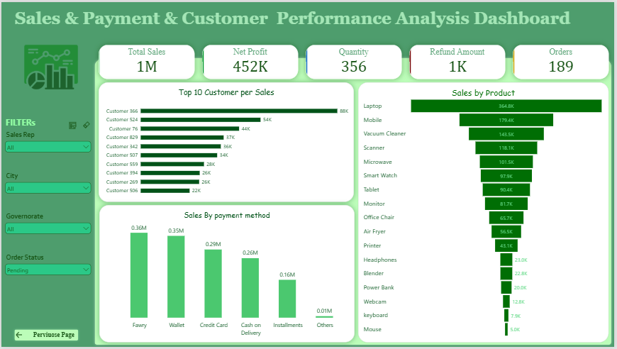

Sales Performance, Customer Behaviour & Payment Analysis
From a messy transactional workbook to a two-page Power BI report: this project explores how sales value is distributed across products, categories, channels and payment methods—and why order status and data quality matter before interpreting any KPI.
The business question
A sales dashboard should do more than display attractive charts. A manager needs to know what is driving sales, which products and channels contribute most, how customers and payment methods are distributed, and whether the headline figures represent delivered business—or a mixture of delivered, pending, returned and cancelled orders.
This report was designed around those questions, with filters for sales representative, city, governorate and order status so the user can move from an overall view to a focused operational segment.
Understanding the data before the visuals
The supplied workbook contains 6,080 transaction rows across four related sheets: Sales, Customers, Products and Sales Reps. The Sales sheet contains 25 fields spanning order dates, customer and product identifiers, quantities, unit costs and prices, discounts, shipping, channels, payment methods, order status, returns and refunds.
Data-quality issues identified in the source
- Inconsistent labels: status, sales-channel and payment-method values appear with inconsistent capitalization and/or leading or trailing spaces (for example, Delivered/delivered and Store/STORE).
- Repeated identifiers: 80 rows are beyond the 6,000 distinct Order IDs; duplicates need a business rule before any row-level deduplication.
- Missing fields: examples include 71 missing Customer IDs, 54 missing Unit Prices, 66 missing Payment Methods, 43 missing Shipping Costs and 62 missing Governorates.
- Returns are a separate financial event: the source contains refund amounts concentrated in returned orders. Refunds should not be silently mixed into gross sales or treated as a simple deduction without validating the accounting definition.
- Date and text consistency: Order Date values appear in multiple text/date formats, so date parsing and standardization are prerequisites for trustworthy time trends.
These are source-level observations, not a claim that every issue has already been fully corrected in the PBIX model. The report should be interpreted with the stated filter context and measure definitions.
How to read the financial numbers
The report KPIs below are transcribed from the corrected Power BI report with all slicers cleared. They are rounded display values and should be read using the report's own measure definitions:
The dashboard screenshots have now been refreshed from the corrected PBIX with the report slicers set to All (Sales Rep, City, Governorate and Order Status). The KPI cards in this all-status view display the following rounded values:
These are the rounded KPI values shown by the Power BI report itself, using its current model and measure definitions. They are not interchangeable with independently recalculated source-workbook totals. No currency unit is stated in the report, so none is assumed here.
Report walkthrough
Page 1 — Sales & profit overview
Monthly sales and profit trends, category comparisons and sales-channel contribution, with slicers for sales representative, city, governorate and order status. The key analytical use is to compare segments under the same filter context rather than treating every displayed total as an all-orders KPI.

Page 2 — Customers, products & payments
Top customers by sales, product contribution and payment-method distribution. This view helps identify concentration in customer and product sales and compare payment mix, while retaining the same report filters.

What this analysis is intended to help answer
- Which product categories and individual products contribute most to sales value?
- How does the sales mix differ across store, marketplace, website, mobile app and phone orders?
- Which customers account for the largest share of recorded sales?
- How are payment methods distributed, and where are payment fields missing or inconsistently labelled?
- How do pending, delivered, returned and cancelled orders change the interpretation of sales and profit?
- Which data-quality exceptions should be resolved before management relies on the KPIs?
Download the Power BI report
Open the PBIX in Power BI Desktop to explore the pages and change the slicers. The supplied screenshots show Order Status = All. Open the report in Power BI Desktop to select individual statuses and explore the corresponding operational segments.
Download Power BI file (.pbix) ↓
The portfolio shares the PBIX report and dashboard previews. The original source workbook is not included in the public download.
Skills demonstrated
- Multi-page Power BI report design and business-focused visual hierarchy.
- Sales, product, customer, channel and payment analysis.
- KPI interpretation with explicit filter-context awareness.
- Source-data profiling: missing values, repeated identifiers and inconsistent categories.
- Translating transactional data into questions relevant to commercial operations.